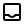

Projeto Extensionista II
City Shield
Como surgiu:
Em 2023 , Salvador, Bahia, ocupa a perturbadora 12ª posição na lista das cidades mais
violentas do mundo, de acordo com o indicador de crimes da Numbeo. Diante esse triste cenário surgiu
a ideia de criar um projeto para auxiliar os orgãos publicos na proteção da comunidade local.
Cenario:
Para retratar os resultados da pesquisa realizada pela Numbeo,
foi desenvolvida uma pesquisa sobre a opinião popular a respeito da segurança pública na
comunidade de Candeias, Bahia, região metropolitana de Salvador. o resultado obtido foi que a
violência também fazia parte das regiões mais proximas da capital.
Projeto:
Com base nas informações provenientes das pesquisas, foi possível compreender o contexto em que a comunidade se encontra. A partir dessa análise, surgiu o City Shield,
um aplicativo projetado para auxiliar as organizações públicas
em manter proteção dos cidadãos, integrando a comunidade
aos orgãos públicos.